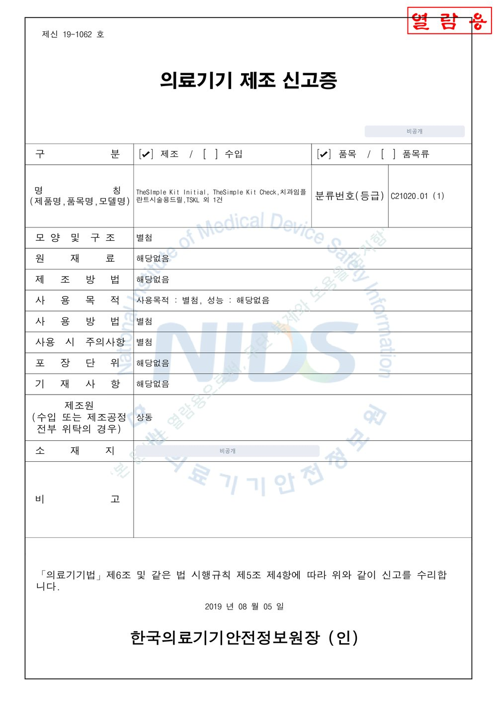
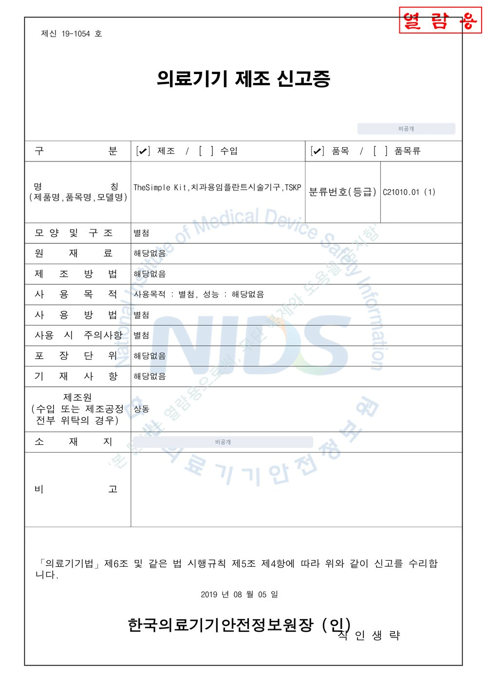
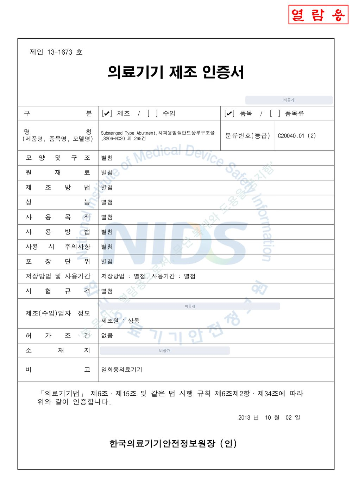
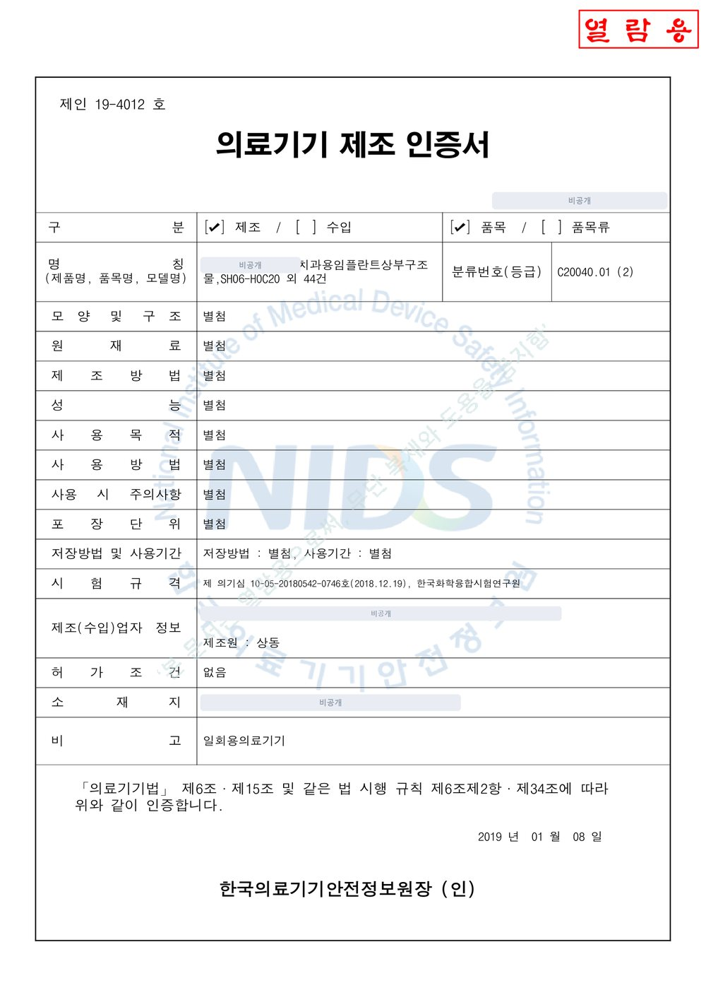
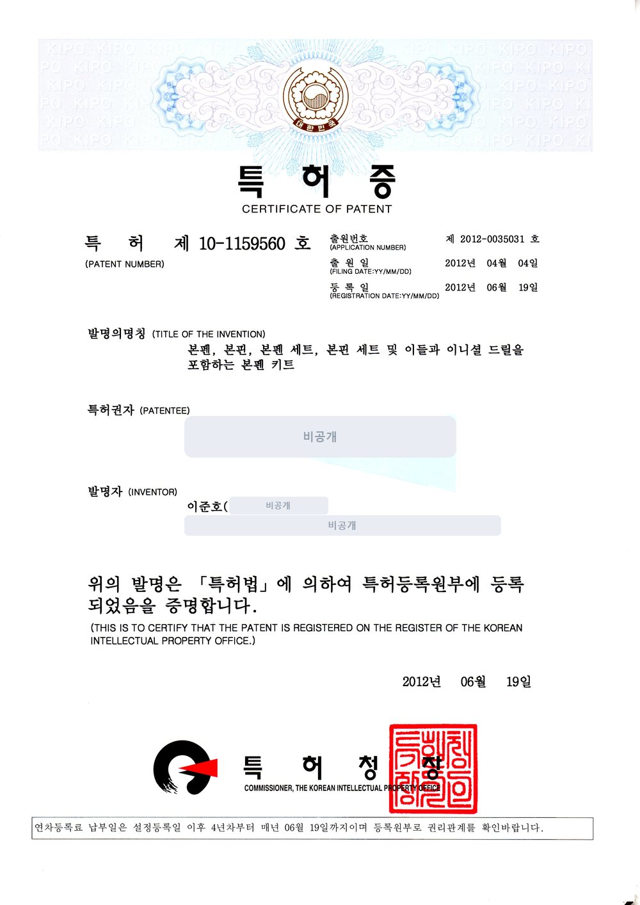
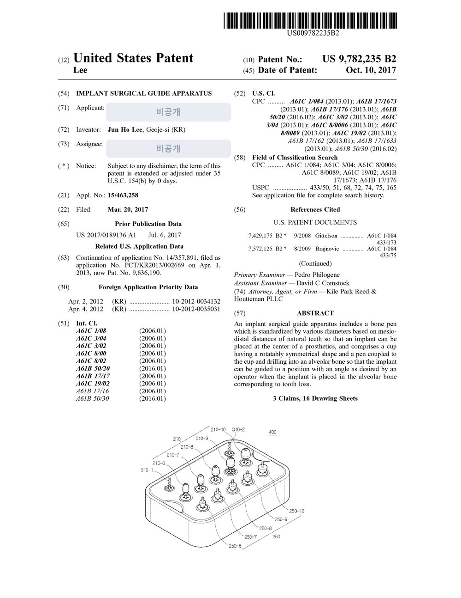
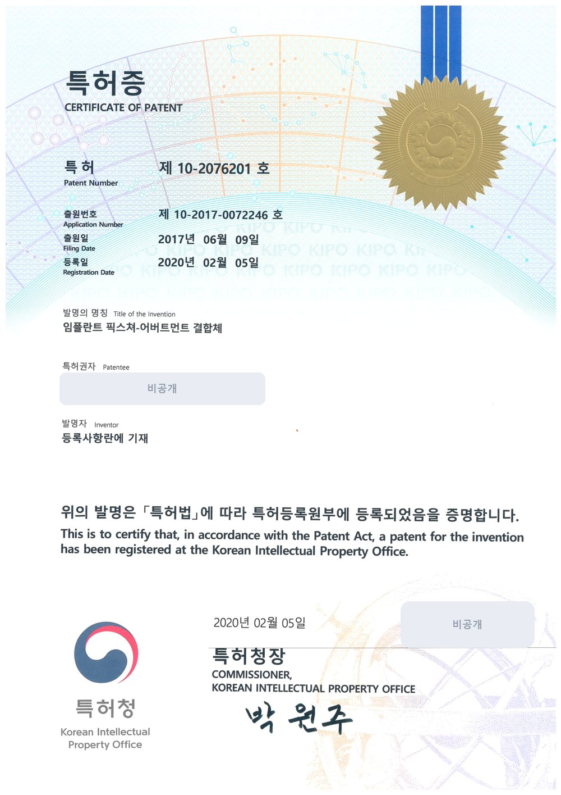
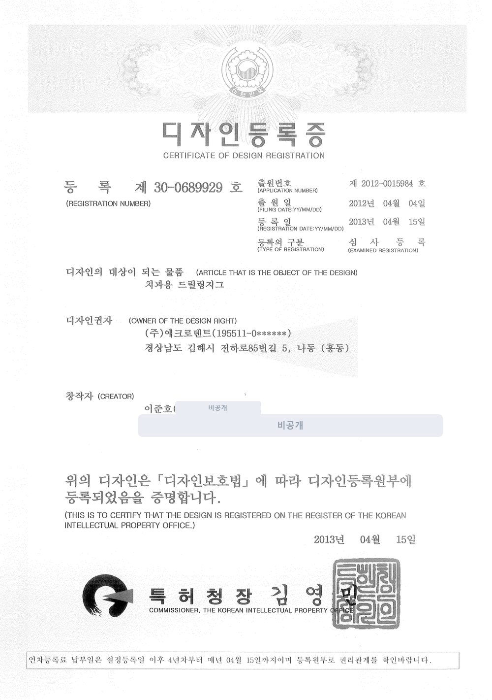

기구를 고를 때,
증서부터 봅니다.
임플란트 수술 기구와 어벗먼트는 의료기기입니다. 제조소의 GMP, 품목별 식약처 신고 · 인증, 특허를 어디서 어떻게 확인하는지 실제 증서로 정리했습니다.

사양만큼 중요한
세 가지 증서.
임플란트 수술 기구와 어벗먼트는 의료기기입니다. 제품을 고를 때 사양만큼 확인해야 하는 것이 제조소의 GMP, 품목별 식약처 신고 · 인증, 그리고 기술의 근거가 되는 특허입니다.
어벗츠가 공급하는 심플웨이 제품의 제조 파트너 (주)애크로덴트의 증서를 예로, 무엇을 보면 되는지 정리했습니다.
GMP · 품목 · 특허.
- GMP 적합인정서인정번호 · 품목군 · 유효기간
- 식약처 신고 · 인증 번호제품별 번호(제신 · 제인 · 제허)와 모델명이 맞는지
- 특허 · 디자인 등록등록번호와 권리자, 존속 여부는 KIPRIS에서
- 첨부문서사용 목적 · 방법 · 주의사항은 제품 첨부문서 기준
제조소가 기준을
갖췄는지.
GMP 적합인정서는 의료기기 제조소가 제조 및 품질관리 기준에 맞는지 인정한 문서입니다. 인정번호, 대상 품목군, 유효기간을 봅니다.
(주)애크로덴트는 치과용 임플란트 시스템(I) 품목군으로 GMP 적합인정(KTR-ABBA-19407)을 받았고, 유효기간은 2027-01-07까지입니다.

품목마다
번호가 있습니다.




신고와 인증,
번호로 구분합니다.
번호 앞의 제신은 신고, 제인은 인증, 제허는 허가를 뜻합니다. 증서에 적힌 모델명이 실제 제품과 맞는지 함께 확인하십시오. 품목 정보는 식약처 의료기기 정보 조회 서비스에서도 찾을 수 있습니다.
기술의 근거는
등록번호로.




숫자로 보는
증서.
증서 전체는
회사소개에서.
특허증 · 신고 · 인증서 · GMP · 디자인 등록증 사본은 회사소개 인증 · 특허에서 크게 볼 수 있습니다. 사본은 개인정보를 가리고 게시합니다.
특허 · 디자인권의 존속 여부와 권리 관계는 KIPRIS에서 확인할 수 있습니다.

이어서 읽어 보세요.

치과기공소 업무관리 프로그램 도입 전, 의뢰 관리 5가지 체크 | 어벗츠 abuts.fit
치과기공소 업무관리 프로그램이나 의뢰 플랫폼을 검토하기 전 정리할 기공 의뢰 관리 5가지 항목과, 작은 업무부터 디지털로 옮기는 순서, 어벗츠 도입 전 준비할 질문을 정리했습니다.

치과 기공 의뢰, 전화 대신 화면으로 확인하는 법 | 치과·기공소 어벗츠
치과에서 치과기공소로 보내는 기공 의뢰와 커스텀 어벗먼트 제작 의뢰를 abuts.fit 화면으로 등록하고, 준비·가공·출고·완료 단계와 송장까지 확인하는 방법을 이야기로 정리했습니다.

치과의사가 직접 만든 치과·기공소 의뢰 플랫폼, 어벗츠 이야기
치과의사이자 개발자인 이준호 원장이 진료실의 불편에서 출발해 만든 치과·치과기공소 제작 의뢰 플랫폼 어벗츠(abuts.fit). 제품과 플랫폼이 동료 치과로 이어지기까지의 이야기.